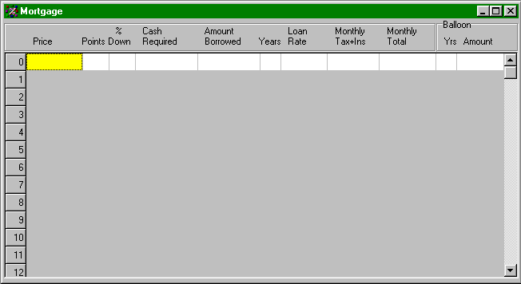

This is the easiest of the Per%Sense screens to use. Each line models a single, self-contained calculation. Here, you can compute a monthly payment (given the price of a house and your downpayment) or compute the price you can afford to pay for a house (given your cash on hand and amonthly budget).
If you want to print an amortization table, or evaluate a loan with variable interest rate, you should use the Amortization screen instead.